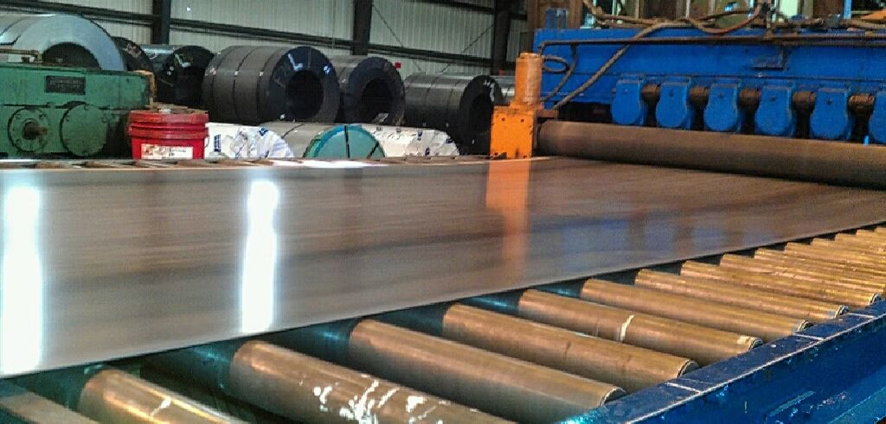
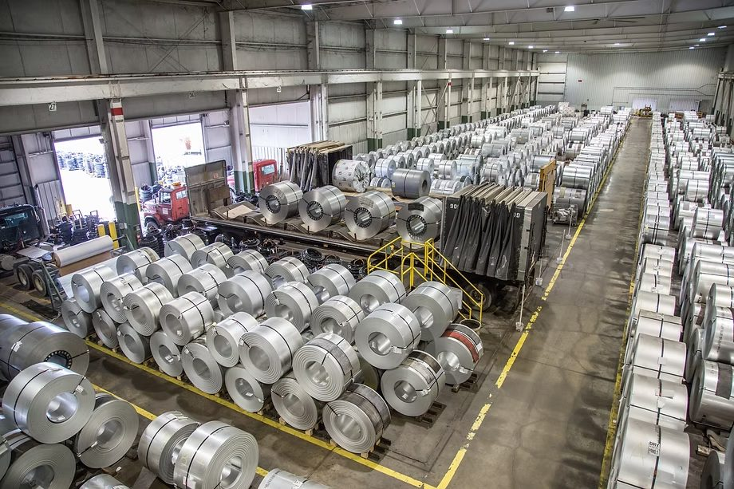

Over five decades of precision toll processing in the heart of Los Angeles. Family owned, conflict free, and still leveling to the tightest tolerances on the West Coast.
Interstate Steel Center was founded in 1970 at 7001 South Alameda Street in Los Angeles, a location the company has called home for over five decades. From its earliest days, ISC was built around a single, unwavering principle: provide the West Coast steel industry with a trusted, independent toll processing partner that would never compete with its own customers.
In an industry where many processors have drifted into distribution and steel sales, ISC has held the line. We process customer owned coils. We do not buy, inventory, or sell steel. This discipline has defined our relationships and driven our growth for more than 55 years.

What began as a single leveling line serving local service centers has grown into a 107,000 square foot facility housing four high capacity leveling lines and, most recently, a precision slitter, expanding ISC's capabilities into full slit coil production for the first time in our history.
Today, ISC serves service centers, brokers, OEMs, and manufacturers across the western United States and beyond. Our customers range from regional distributors to some of the largest steel buyers in North America. They share a common expectation: when a coil leaves ISC, it is flat, square, and packaged to spec, every time.
Through five decades of changing markets, ownership has remained in the family, and so has the discipline that built the company. ISC's reputation rests not on how much steel we move, but on how precisely we return it.

We have never sold a pound of steel, and we never will. For 55 years, that promise has made ISC the trusted, conflict free choice for the West Coast's most demanding steel buyers.
Whether you're a broker, a regional service center, or a national OEM, ISC offers the same commitment: your steel, processed to spec, returned on time, with no conflicts and no surprises.